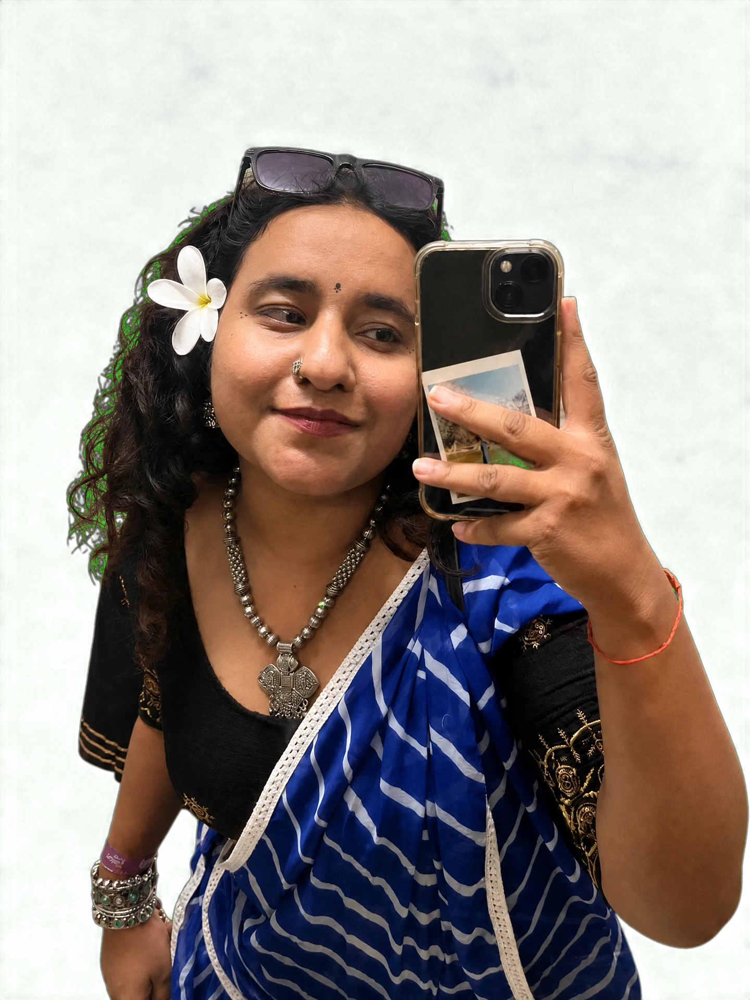

{{ n.text }}
The human file / 01
“I like making things look good. I care even more about making them make sense.
Ratna Rajput
UI/UX designer, Ahmedabad
FILE: RATNA RAJPUT — IN SHORT
{{ f.k }}
{{ f.v }}
About Ratna
four notes, pinned

{{ n.text }}
Off the clock
Not just the screens.
Equal parts observer, collaborator, and chronic “why does this feel this way?” noticer.
Small details, loud laughs, and a lot of room for curiosity.
Things I nerd out on
-
{{ it.n }}
{{ it.title }} {{ it.body }}
{{ st.big }}
{{ st.small }}
Enough about me. Want to see what I've actually built?
What I Do →